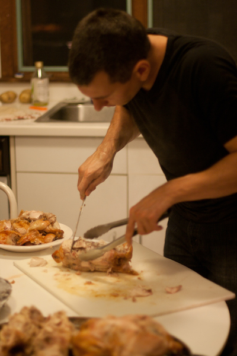

We made a chore chart for camp and assigned 3 people each to every meal-prep and meal-clean-up time slot. On one of our logistics surveys, we asked whether people were OK with getting up early (those that weren't didn't get any breakfast prep) and if they preferred dishwasher to sous chef (so we didn't put knives in unskilled hands).

We barely needed the chart - every meal had plenty of helpers and plenty of cleaners, and some of the best conversations were had over meal prep - but it was nice to have to refer to so that everyone knew who was assigned when.
On our last morning we had to do a whole-house cleanup, and our hosts had left a checklist so we just divvied it up - one person emptying all the trashcans, another checking window locks, and so on.